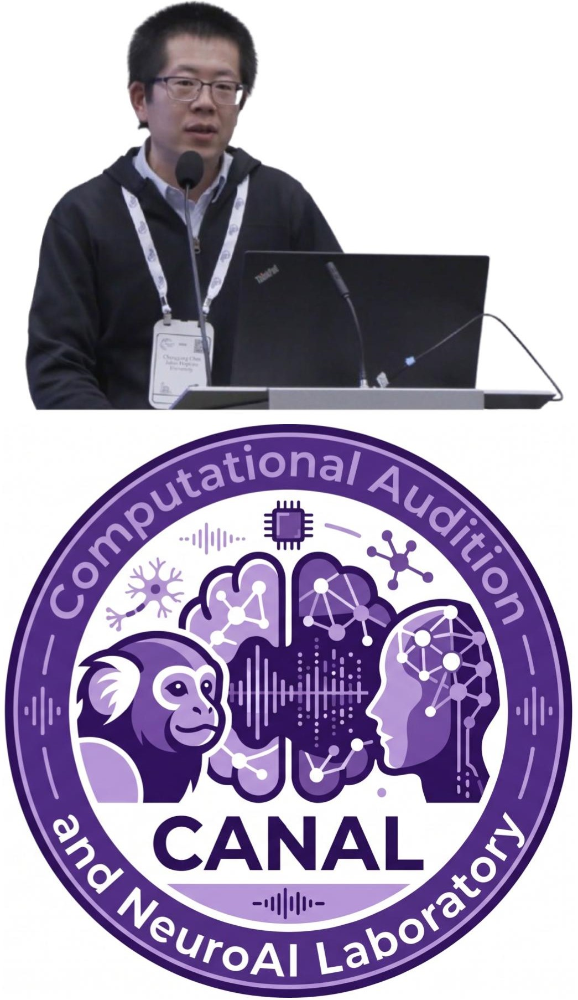

|
Chenggang Chen
I am an incoming Tenure-Track Assistant Professor in the School of Biomedical Engineering at Tsinghua University, where I will lead the
Computational Audition and NeuroAI Laboratory (CANAL) as PI.
My lab's long-term interest lies in auditory perception within both clean and complex scenarios, such as the "cocktail party",
where state-of-the-art AI models and individuals relying on cochlear implants or hearing aids often struggle.
We aim to understand the neural mechanisms of hearing, build NeuroAI models that operate robustly in complex acoustic environments,
and improve the listening experience for those with hearing impairments.
To achieve this, 1) we will integrate invasive neurophysiological recordings and psychoacoustics in marmoset monkeys to assess the single-neuron correlates of auditory perception.
2) Additionally, we will collect noninvasive human fMRI and EEG data in combination with psychoacoustics, allowing us to study auditory perception unique to humans,
such as speech and music.
3) We will conduct this research with both normal-hearing individuals and those who rely on hearing aids or cochlear implants.
4) Finally, brain-inspired NeuroAI models trained in real-world environments will help us model brain responses and perceptual behaviors in both marmosets and humans,
which will further inspire new experimental studies.
Email /
CV /
Google Scholar /
|

|
Educations
Ph.D. in Biomedical Engineering, Tsinghua University, Beijing, China, 2011.08-2018.07
B.S. in Biomedical Engineering, Jilin University, Changchun, China, 2007.08-2011.07
Professional Experience
Assistant Professor, Tsinghua University, Beijing, China 2026.07
Research associate, Johns Hopkins University, Baltimore, MD 2024.10-2026.06
Postdoctoral fellow, Johns Hopkins University, Baltimore, MD 2018.09-2024.09
|
|
Publications
My expertise includes systems and computational auditory neuroscience using the marmoset monkey as a nonhuman primate model, as well as NeuroAI modeling.
I have published extensively in both the neuroscience and AI/ML fields.
In neuroscience, my first-author (ranked first or solo) publications include
Nature Communications (2025), PLoS Biology (2026), The Journal of Neuroscience (2018 and 2024),
Communications Biology (2019), and Hearing Research (2023, Cover Paper).
In the AI/ML field, I have published as the sole first and sole corresponding author in NeurIPS 2024 [Top 2%]
and ICML 2026 [Spotlight, Top 2.2%].
|
|
|
Real-World Unsupervised Models Generalize to Predict Brain Responses to Out-of-Distribution Stimuli
Chenggang Chen,
Zhiyu Yang,
Xiaoqin Wang,
ICML, 2026 (Spotlight, Top 2.2%)
OpenReview
/
Link
We demonstrate that models trained with unsupervised objectives on real-world data significantly outperform supervised models in predicting brain responses across both human auditory and visual cortex.
We show that this performance advantage is not driven by network architecture or dataset size, but rather by the data distribution.
Crucially, we find that unsupervised models trained on real-world data exhibit remarkable out-of-distribution generalization:
a model trained exclusively on Mandarin speech accurately predicts English-driven brain responses,
and a model trained on infant head-cam footage predicts adult visual responses to curated object images.
|
|
Micropapers
|
Squareplus: A Softplus-Like Algebraic Rectifier
A Convenient Generalization of Schlick's Bias and Gain Functions
Continuously Differentiable Exponential Linear Units
Scholars & Big Models: How Can Academics Adapt?
|
|
Recorded Talks
|
Radiance Fields and the Future of Generative Media, 2025
View Dependent Podcast, 2024
Bay Area Robotics Symposium, 2023
EGSR Keynote, 2021
TUM AI Lecture Series, 2020
Vision & Graphics Seminar at MIT, 2020
|
|
Academic Service
|
Lead Area Chair, ICCV 2025
Lead Area Chair, CVPR 2025
Area Chair, CVPR 2024
Demo Chair, CVPR 2023
Area Chair, CVPR 2022
Area Chair & Award Committee Member, CVPR 2021
Area Chair, CVPR 2019
Area Chair, CVPR 2018
|
|
Teaching
|
Graduate Student Instructor, CS188 Spring 2011
Graduate Student Instructor, CS188 Fall 2010
Figures, "Artificial Intelligence: A Modern Approach", 3rd Edition
|
Feel free to steal this website's source code. Do not scrape the HTML from this page itself, as it includes analytics tags that you do not want on your own website — use the github code instead. Also, consider using Leonid Keselman's Jekyll fork of this page.
|
|
{kind=link}
{kind=link}